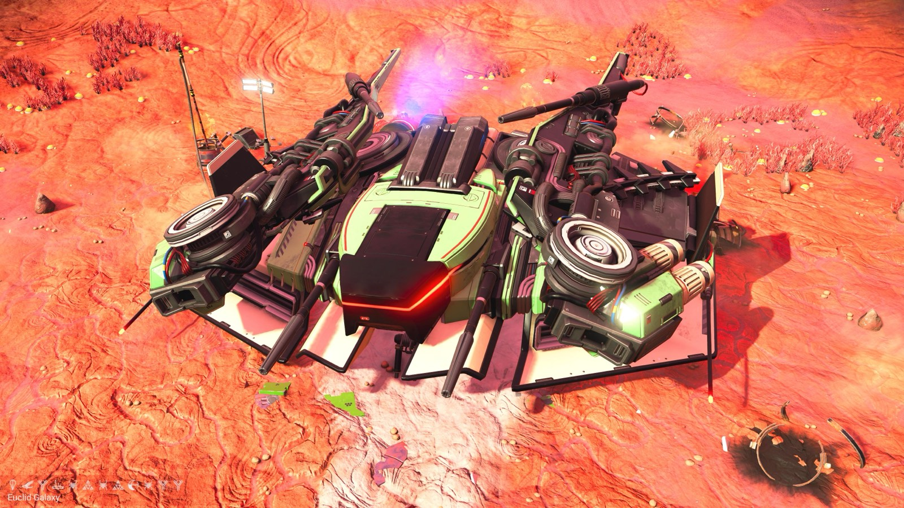
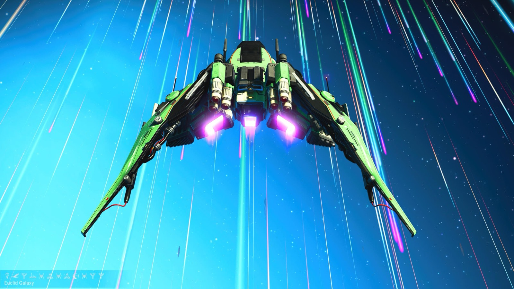
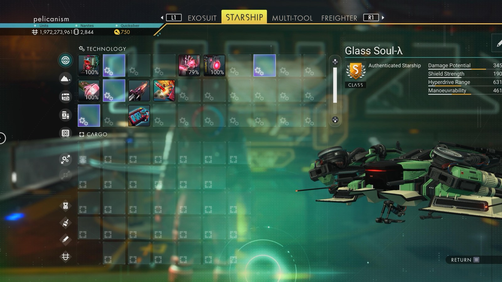

Waypoint 4
Tachee-Unji VII



- Portal glyphs
- 51E67F7F47EE
- Balloon · Bird · Tree · Boat · Bug · Atlas · Bug · Atlas · Eclipse · Bug · Tree · Tree
- Distance from core
- 1,151,262 LY
- Jump from previous
- 2,380 LY
- Planet coordinates
- +7.97, +140.65
- Ship as found
- C-class, 33+23 slots
- S-class ship
- Glass Soul-λ
- Damage
- 345
- Shield
- 190
- Hyperdrive
- 631
- Manoeuvrability
- 461